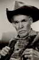
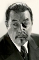
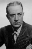

Country:United States, 75 minutes
Spoken languages:
Genres:Horror, Fantasy
Director(s):Stuart Walker
Writer(s):John Colton
Video Codec:Unknown
Number: 1087


Certification:
Storyline:
A strange animal attack turns a botanist into a bloodthirsty monster.
Cast:   
Medium: Original DVD,
Comments: Part of: The Wolf Man - The Legacy Collection
Loaned: No
Aspect ratio: Unknown